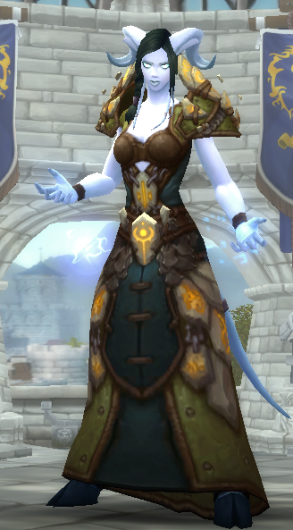

As a newcomer to World of Warcraft, you will quickly discover that you must pick a side. The Alliance and Horde are old enemies, and each one has unique cities and races that belong to it. This is not to say that you can only play for one side, however. Many players have both Alliance and Horde characters, which allows them to enjoy different sides of each story and interact with more players.
If you do not know which side you want to start with, I suggest looking at the available races and deciding which one you want to run around the world as. You could be a human, true to who you are as you sit at your computer, or you could be something completely different like a Draenei, which are lovingly referred to as “Space Goats” by the community. What can I say? They have unusual blue skin tones, hooves, horns, tails, and tendrils!
